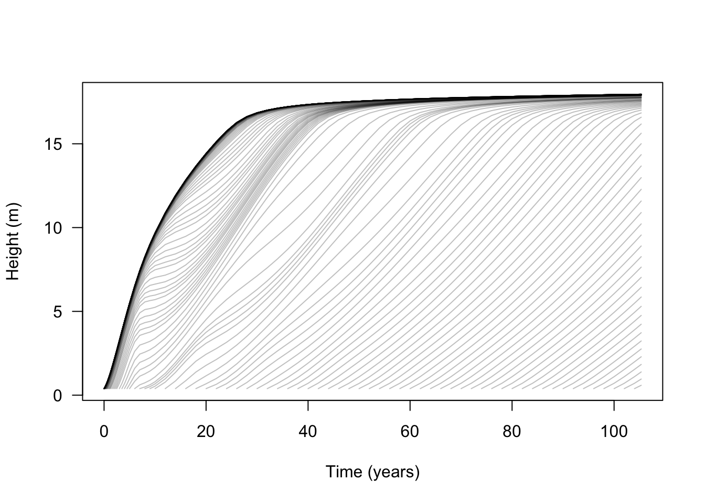
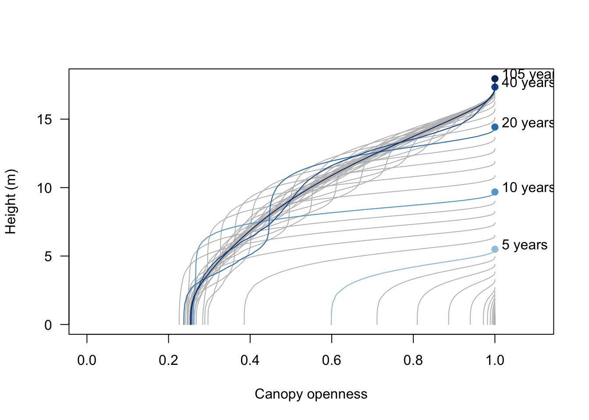
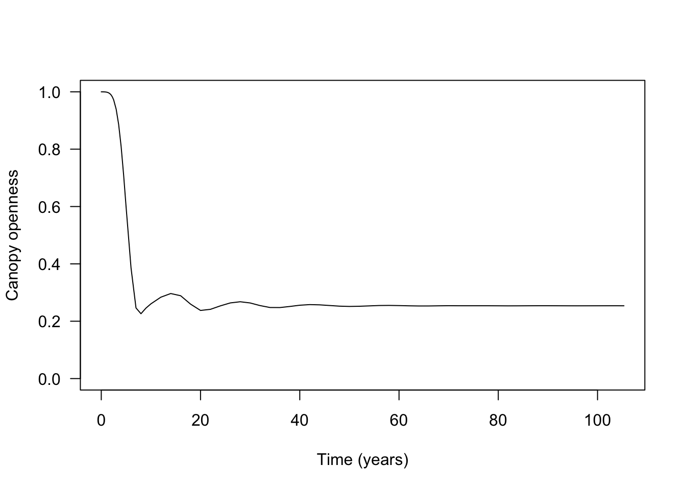
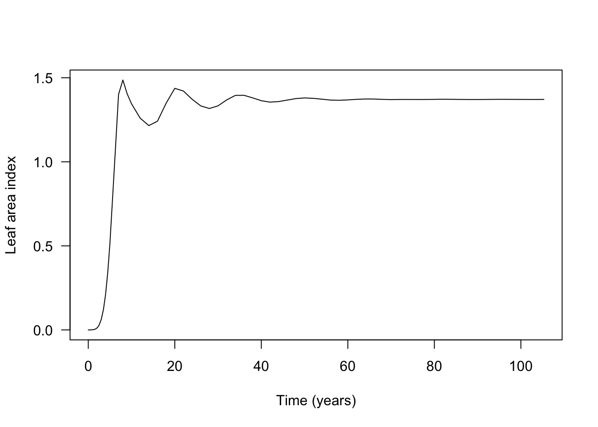
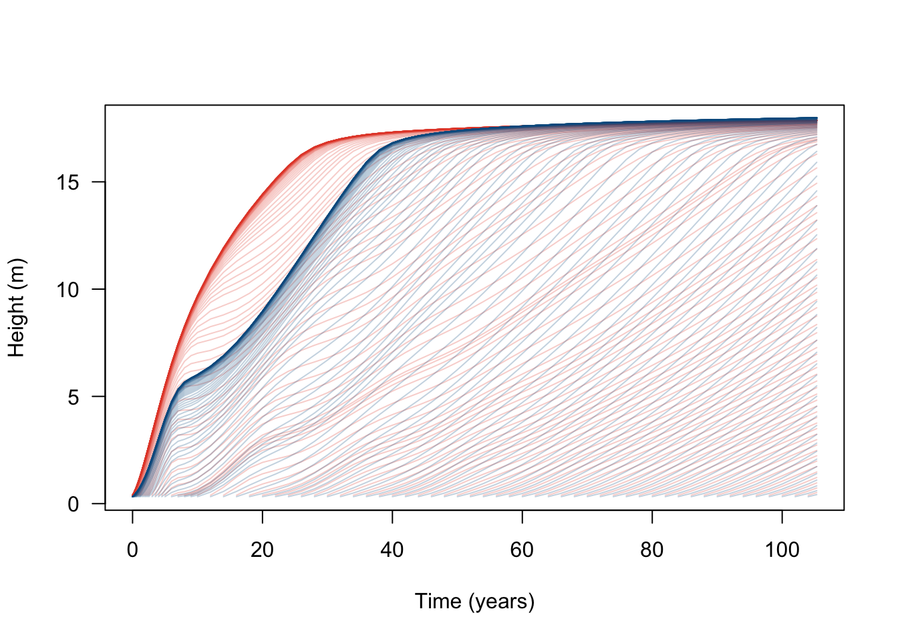
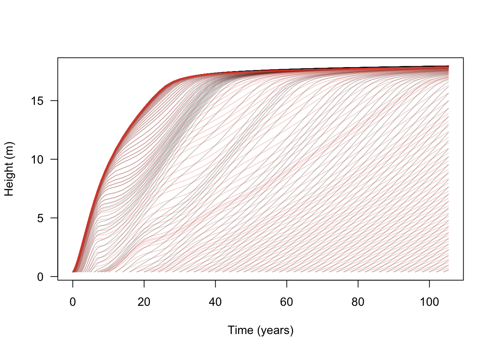
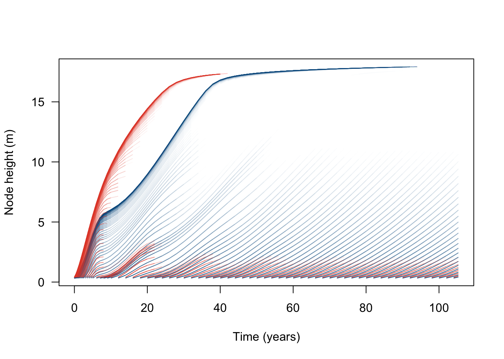
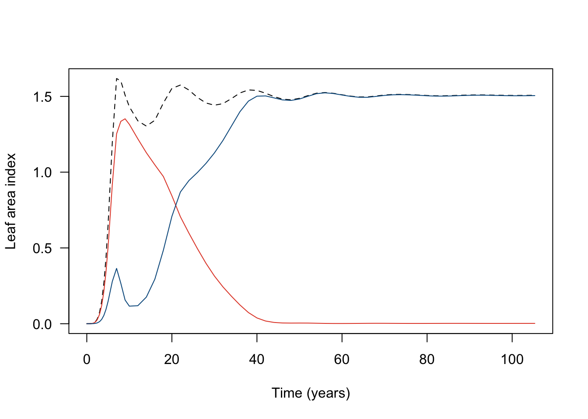

library(plant)
params <- scm_base_parameters("FF16")
params$disturbance_mean_interval <- 30.0Patch dynamics
guide
The most important feature of plant is modelling size distributions for multiple competing species within a patch. A patch is simply an area in which a collection of individuals grow and compete for resources. Having explored the individual elsewhere, the aim here is to use plant to investigate the dynamics of many individuals within a single patch.
Plant solves these dynamics by integrating along the characteristics of a partial differential equation — see the size-structured PDE being solved and the characteristic method used to solve it.
Background
First we instantiate the basic parameters of the FF16 strategy, particularly the probability that a patch is disturbed (via disturbance_mean_interval):
One patch
Next, we configure a patch containing a single species:
patch <- expand_parameters(trait_matrix(0.0825, "lma"), params)and run the plant characteristic solver to step the equations defining nodes of individuals forward in time:
result <- run_scm(patch, collect = TRUE)run_scm(collect = TRUE) collects information about the state of the system at every ODE step:
names(result)[1] "steps" "n_spp" "species" "env" "offspring_production" "net_reproduction_ratios" "p" Entries are:
- steps: a table with one row per ODE step, recording the
timeof the step and thepatch_density(the density of patches of this age in the metapopulation) - n_spp: the number of species in the patch
- species: a tidy table with one row per node per step. Alongside
time,stepandnodeidentifiers it records each node’s state, includingheight,log_density/densityandcompetition_effect(the leaf area of an individual in that node) - env: a list describing resource availability. This includes
light_availability, a table giving canopy openness at a series of heights for each step (the competitive environment of the patch, e.g. canopy openness at a given height in the FF16 strategy) - offspring_production: the offspring production from the patch during its development
- net_reproduction_ratios: the net reproduction ratio for each species
- p: a copy of the input parameters
First we explore patch state:
t <- result$steps$time
h <- t(sdd_matrix(dplyr::filter(result$species, species == "1"), "height"))here h is the height of every node, arranged so that each row is a time and each column is a node:
dim(h)[1] 142 142While the solver ran the patch ODEs for 142 steps, the time points are not evenly distributed:
signif(t[c(1, 10, 50, 100, 142)], 1)[1] 0e+00 1e-04 2e-02 2e+01 1e+02higher temporal resolution is needed to resolve early patch development, where small differences are magnified through competitive feedbacks. Our patch ran for 105 yrs, but the solver spent half the recorded steps exploring the first year alone. More on timing can be found in the node scheduling algorithm.
Nodes are introduced at each time-step, except the last. At time step \(i\), the rows of h record the height of all previously introduced nodes in the patch:
h[10, 1:10] [1] 0.3920954 0.3920902 0.3920850 0.3920798 0.3920746 0.3920694 0.3920642 0.3920589 0.3920537 0.3920458with NA for nodes that have not yet been introduced:
h[10, 11]10
NA Similarly, the \(j\)th column of h records the heights of a particular node:
h[10:19, 10] 10 11 12 13 14 15 16 17 18 19
0.3920458 0.3920537 0.3920617 0.3920696 0.3920776 0.3920935 0.3921094 0.3921253 0.3921412 0.3921571 with NA at time steps before it was introduced:
sum(is.na(h[, 10]))[1] 9With a single species there is always one more time step than node introduction, with the last two steps having the same number of nodes. With multiple species there can be more time steps than node introductions, as we’ll record data every node introduction for either species, each of which will be refined to different schedules.
In the FF16 strategy, Individuals increase in height with respect to time, but because they are competing the growth rate depends on the state of the environment (e.g. the amount of shading above an Individual’s canopy), in addition to size dependent growth.
We can plot the trajectories of nodes developing within a patch over time:
matplot(t, h, lty=1, col=util_colour_set_opacity("black", 0.25), type="l",
las=1, xlab="Time (years)", ylab="Height (m)")
The light environment is stored over each time step, meaning that we can also plot how it changes during patch development:
light <- result$env$light_availability
# Set limits
xlim <- c(0, 1.1)
ylim <- range(light$height)
# Draw the spline at each step
plot(NA, xlim=xlim, ylim=ylim, las=1, xlab="Canopy openness", ylab="Height (m)")
for (s in unique(light$step)) {
x <- dplyr::filter(light, step == s)
lines(x$light_availability, x$height, col = "grey")
}
# Add labels at specific times
blues <- c("#DEEBF7", "#C6DBEF", "#9ECAE1", "#6BAED6",
"#4292C6", "#2171B5", "#08519C", "#08306B")
times <- c(5, 10, 20, 40, max(result$steps$time))
cols <- colorRampPalette(blues[-(1:2)])(length(times))
for (i in seq_along(times)) {
s <- result$steps$step[which.min(abs(times[[i]] - result$steps$time))]
x <- dplyr::filter(light, step == s)
lines(x$light_availability, x$height, col=cols[[i]])
y <- max(x$height)
points(1, y, pch=19, col=cols[[i]])
text(1 + strwidth("x"), y, paste(round(times[[i]]), "years"),
adj=c(0, 0))
}
initally (bottom right) all nodes in the patch are short and the canopy is rather open (close to one). In later stages of patch development, we see that only the tallest individuals experience an open canopy. Notably, the canopy openness experienced by shorter individuals fluctuates as older individuals die and canopy gaps are filled in.
This is best shown by plotting the canopy openness at ground level over time:
ground <- light |>
dplyr::group_by(time) |>
dplyr::slice_min(height, n = 1, with_ties = FALSE) |>
dplyr::ungroup()
plot(ground$time, ground$light_availability, type="l", las=1,
ylim=c(0, 1), xlab="Time (years)", ylab="Canopy openness")
Again, the waves here are show rounds of recruitment and self thinning. Mortality is not instantaneous, so monocultures (patches of one species) recruit to a density that generates a canopy that they cannot survive under.
Multiple patches
In the FF16 strategy, leaf area index (LAI) is the driver that controls the canopy openness (via the light extinction coefficient params$k_I, following exponential extinction). The collected output records the leaf area (competition_effect) of an individual in each node, so we can integrate across the size distribution to recover the patch-level competition experienced at ground level (height = 0) in terms of LAI:
# Light extinction coefficient, used to weight leaf area into competition.
k_I <- result$p$strategies[[1]]$k_I
lai <- result$species |>
dplyr::filter(species == "1") |>
dplyr::group_by(time) |>
dplyr::summarise(
lai = patch_competition(height, density, competition_effect, k_I),
.groups = "drop"
)
plot(lai$time, lai$lai, type="l", las=1, xlab="Time (years)", ylab="Leaf area index")
Multi-species patches
If multiple species are grown at once, they compete with one another. This adds a second species – with a higher leaf mass area (LMA) than the first species – to the population:
patch_2sp <- expand_parameters(trait_matrix(0.2625, "lma"), patch)Then collect the patch-level dynamics:
result_2sp <- run_scm(patch_2sp, collect = TRUE)We can plot the development of each species within the patch:
t2 <- result_2sp$steps$time
h1 <- t(sdd_matrix(dplyr::filter(result_2sp$species, species == "1"), "height"))
h2 <- t(sdd_matrix(dplyr::filter(result_2sp$species, species == "2"), "height"))
cols <- c("#e34a33", "#045a8d")
# Species 1 - red
matplot(t2, h1, lty=1, col=util_colour_set_opacity(cols[[1]], .25), type="l",
las=1, xlab="Time (years)", ylab="Height (m)")
# Species 2 - blue
matlines(t2, h2, lty=1, col=util_colour_set_opacity(cols[[2]], .25))
Alternatively we can compare the growth of the low LMA species (red) in a patch by itself or with another species:
# Monoculture patch (black)
matplot(t, h, lty=1, col=util_colour_set_opacity("black", .25), type="l",
las=1, xlab="Time (years)", ylab="Height (m)")
# Two species patch (red)
matlines(t2, h1, lty=1, col=util_colour_set_opacity(cols[[1]], .25))
This shows that the additional species does not significantly affect the growth of the initial wave of nodes (because the second species is growing more slowly and is shorter than the first species). However, once canopy closure has occurred (around year 5), subsequent waves of arriving nodes are competitively suppressed, slowed or eliminated.
The dynamics are easier to see when node trajectories are weighted by node density (some of the lines here represent nodes at close to zero density). Log density is available as a characteristic variable of all plant strategies:
# Relativise the log densities onto (-4, max)
d1 <- t(sdd_matrix(dplyr::filter(result_2sp$species, species == "1"), "log_density"))
d2 <- t(sdd_matrix(dplyr::filter(result_2sp$species, species == "2"), "log_density"))
rel <- function(x, xmin) {
x[x < xmin] <- xmin
xmax <- max(x, na.rm=TRUE)
(x - xmin) / (xmax - xmin)
}
rd1 <- rel(d1, -4)
rd2 <- rel(d2, -4)
# R doesn't seem to offer a way to plot lines that vary in colour, so
# this is quite roundabout using `segments`, shaded by the density at
# the first part of the line segment:
n <- length(t2)
x <- matrix(rep(t2, ncol(h1)), nrow(h1))
col1 <- matrix(util_colour_set_opacity(cols[[1]], rd1), nrow(d1))
col2 <- matrix(util_colour_set_opacity(cols[[2]], rd2), nrow(d2))
plot(NA, xlim=range(t2), ylim=range(h1, na.rm=TRUE),
las=1, xlab="Time (years)", ylab="Node height (m)")
segments(x[-1, ], h2[-1, ], x[-n, ], h2[-n, ], col=col2[-n, ], lend="butt")
segments(x[-1, ], h1[-1, ], x[-n, ], h1[-n, ], col=col1[-n, ], lend="butt")
Now we see that the high LMA species (blue) becomes dominant, excluding the low LMA species (red) from the canopy.
The changing intensity of competition can be shown as the total leaf area of each species:
lai2 <- result_2sp$species |>
dplyr::group_by(species, step) |>
dplyr::summarise(
lai = patch_competition(height, density, competition_effect, k_I),
.groups = "drop"
) |>
tidyr::pivot_wider(names_from = species, values_from = lai,
names_prefix = "sp", values_fill = 0) |>
dplyr::right_join(result_2sp$steps, by = "step") |>
dplyr::arrange(step) |>
dplyr::mutate(dplyr::across(c(sp1, sp2), ~tidyr::replace_na(.x, 0)),
total = sp1 + sp2)
# Patch total LAI (dashed)
plot(lai2$time, lai2$total, type="l", las=1, lty=2,
xlab="Time (years)", ylab="Leaf area index")
# Species 1 LAI (red)
lines(lai2$time, lai2$sp1, col=cols[[1]])
# Species 2 LAI (blue)
lines(lai2$time, lai2$sp2, col=cols[[2]])
Appendix - ggplot example
#' A standard plot for density weighted node trajectories
#'
#' Parameters:
#' - result: the output of `run_scm(..., collect = TRUE)`
#' - threshold: lower bound on density
#'
#' Requires:
#' - ggplot2
#' - dplyr
patch <- function(result, threshold = 1e-3) {
# The `species` table is already in long format, with one row per node
# per step, so we can filter and plot it directly.
df <- result$species |>
dplyr::filter(species == "1", density > threshold)
# Plot with densities
ggplot(df, aes(x = time, y = height,
group = node, alpha = density)) +
geom_line() +
labs(x = "Time (years)",
y = "Height (m)",
alpha = "Density") +
theme_bw()
}